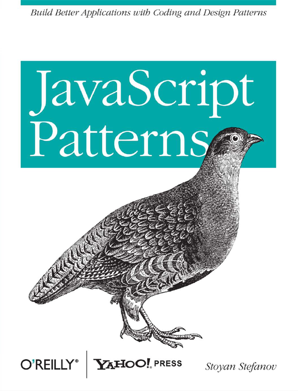
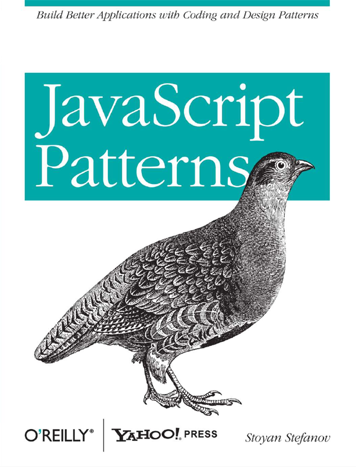
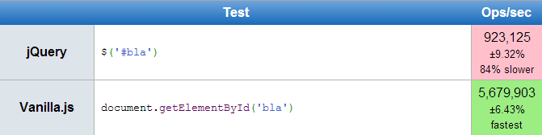

jQuery sin jQuery
Porque hacerlo a pelo es mejor
José Tomás Tocino - @josetomastocino
http://dev.josetomastocino.com
José Tomás Tocino
- Ingeniero Téc. Informático
- Front-ender
- Game developer (más antes que ahora)
- Currando en la UCA
http://dev.josetomastocino.com
"jQuery is the PHP4 of Javascript"
@hipsterhackerRemy Sharp - I know jQuery, now what?
¿Por qué nació jQuery?
var IE4 = (document.all && !document.getElementById) ? true : false;
var NS4 = (document.layers) ? true : false;
var IE5 = (document.all && document.getElementById) ? true : false;
var N6 = (document.getElementById && !document.all) ? true : false;"The Javascript core language is consistent.
It's the DOM implementations that cause headaches
¿Sigue haciendo falta?
Depende
- Público objetivo
- Nivel de interactividad
- Otras restricciones (licencias, peso, etc.)
Introducing...
aPely.js
Como jQuery pero hecho a pelo
Disclaimer
IE8+
Versions 8 and 9 of Internet Explorer contain multiple rendering engines. So even if a site visitor is using IE8 or IE9, it’s possible that they're not using the latest rendering engine their browser containsWAT
<meta http-equiv="X-UA-Compatible" content="IE=edge,chrome=1">DOM Primer
Document Object Model
Representa un documento web mediante
una estructura de árbol

Principales tipos de nodo
DOCUMENT_NODE: base del documentodocument.nodeType == Node.DOCUMENT_NODE trueDOCUMENT_TYPE_NODE: doctypedocument.doctype.nodeType == Node.DOCUMENT_TYPE_NODE trueELEMENT_NODE: cualquier elemento de la web, incluida la raíz<html>, accesible condocument.documentElement:document.documentElement.nodeType == Node.ELEMENT_NODE trueTEXT_NODE: contenido de texto plano dentro de otros nodos
Representación en JavaScript
Se incluye un api para trabajar con elDOM.
window, objeto globalwindow.document, documentoNode, tipo base para todos los nodosElement, tipo base para los ELEMENT_NODENodeList, lista de nodos, como un arrayStaticNodeList, lista de nodos en IE8-
domEnlightenment.com
 

Vamos a recorrer las tareas más habituales con jQuery
y veremos cómo
hacerlas de forma nativa.
document ready?
$(function(){
/* teh jQuery code */
});<!-- Ponemos el JS al final, e ya -->
<script>
// Nuestro código
</script>
</body>Selección de elementos del DOM
jQuery
$('#betabeers, .brogrammer');
JavaScript aPely
// Buscar por ID, devuelve Element o null
document.getElementById('betabeers');
// Buscar por selector CSS, devuelve Element o null
document.querySelector('#betabeers');
// Buscar por selector CSS, devuelve NodeList (StaticNodeList en IE8)
document.querySelectorAll('#betabeers, .brogrammer');
$('#elemento')
vs
document.getElementById('elemento')

También funcionan dentro de otros elementos!
// jQuery
var capa = $('#betabeers');
var brogrammers = capa.find('.brogrammer');
// aPely
var miCapa = document.getElementById('betabeers');
var misBros = miCapa.querySelectorAll('.brogrammer');
Funciones para casos particulares
Muchísimo más rápidas (varios órdenes de magnitud)
// Búsqueda por clase
var misBros = document.getElementsByClassName('brogrammer');
// Búsqueda por etiqueta
var misScripts = document.getElementTagName('script');
Innauguramos nuestra biblioteca aPely.js
¿Te gusta el dólar, Rockefeller?
var $ = function(s){
var nodeSet = document.querySelectorAll(s);
return nodeSet.length == 1 ? nodeSet[0] : nodeSet;
};
var $ = document.querySelectorAll.bind(document);
Eventos
Teh markup:
<button class="drink-beer-btn">
Drink some beer!
</button>
$('.drink-beer-btn').on('click', function(e)
{
alert('Yeah, I drink!');
});
Eventos
aPely
// IE9+
miBoton.addEventListener('click', function(e)
{
alert('Yeah, I drink too!');
}, false);
// IE8 - Ojo al nombre del evento "on" + "click"
miBoton.attachEvent('onclick', function(e)
{
alert('Yeah, I drink');
});
Ampliemos el prototype!
Cross-browser awesomeness!Element.prototype.on = function(event, callback)
{
if (this.addEventListener) {
return this.addEventListener(event, callback, false);
} else {
return this.attachEvent('on' + event, callback);
}
};
NodeList.prototype.on = function(event, callback)
{
for(var i = 0, max_i = this.length; i < max_i; ++i){
this[i].on(event, callback);
}
};
// IE8
if (window.StaticNodeList)
window.StaticNodeList.prototype.on = NodeList.prototype.on;
$('.drink-beer-btn').on('click', function(event)
{
alert('I drink');
});
Información de los elementos
Una etiqueta HTML tiene atributos. Un nodo tiene, además, propiedades (y métodos). Las propiedades habituales se sincronizan con los atributos homónimos.var e = $('input.username');
// Leemos como propiedad
e.id;
// Leemos como atributo
e.getAttribute('id');
// Hay propiedades que no tienen atributo, lógicamente
e.tagName;
// El atributo 'class' es un caso especial
e.getAttribute('class');
// La propiedad es className
e.className;
Contenido de los elementos
HTML// jQuery
e.html(contenido);
// aPely
e.innerHTML = contenido;
// jQuery
e.text(contenido);
// aPely
e.textContent = contenido; // Resto
e.innerText = contenido; // IE
Crear elementos
// jQuery
var nuevoElem = $('<span>');
// aPely
var nuevoElem = document.createElement('span');
// jQuery
padre.append(nuevoElem);
// aPely
padre.appendChild(nuevoElem);
Borrar elementos
// jQuery
e.remove();
// aPely
e.parentNode.removeChild(e);
Imitemos jQuery...
Element.prototype.remove = function ()
{
this.parentNode.removeChild(this);
};

CSS!
jQuery
$('div').css('color');
var capa = document.querySelector('div');
// Estilos en línea (Lect. y escrit.)
capa.style.color;
// Todos los estilos (Sólo lect.)
getComputedStyle(capa).color;
// Todos los estilos (IE<9)
capa.currentStyle.color;
Ajax!
jQuery
$.ajax({
'url' : 'echo.php',
'success' : function (datos) {
// Procesar datos
}
});
JavaScript
var request = new XMLHttpRequest();
request.onreadystatechange = function ()
{
if(this.readyState == 4 && this.status == 200)
{
var datos = this.responseText;
}
};
request.open('GET', 'echo.php', true);
request.send(null);Bonus track!
Javascript para webs de panaderías, carnicerías and the like
Porque no todos somos
DOM Based Routing
Paul Irish: DOM Based Routing
Viget: JavaScript Execution Patterns for Non-Web Apps
¿Meterlo todo en el $(document).ready?

SitioWeb =
{
common :
{
domReady : function (){
// ...
},
windowLoaded : function (){
// ...
}
},
pagina_tal :
{
domReady : function (){
// ...
},
windowLoaded : function (){
// ...
}
}
}
Boot = {
__load : function (e, page) {
var bodyId = page || document.body.id;
var namespace = SitioWeb;
if (namespace[bodyId] &&
namespace[bodyId][e] &&
typeof namespace[bodyId][e] == 'function')
{
console.log("Evento '" + e + "' para página '" + bodyId + "'");
namespace[bodyId][e]();
}
},
domReady : function(){
Boot.__load("domReady", "common");
Boot.__load("domReady");
},
windowLoaded : function(){
Boot.__load("windowLoaded", "common");
Boot.__load("windowLoaded");
}
};
$(document).ready(Boot.domReady);
$(window).load(Boot.windowLoaded);